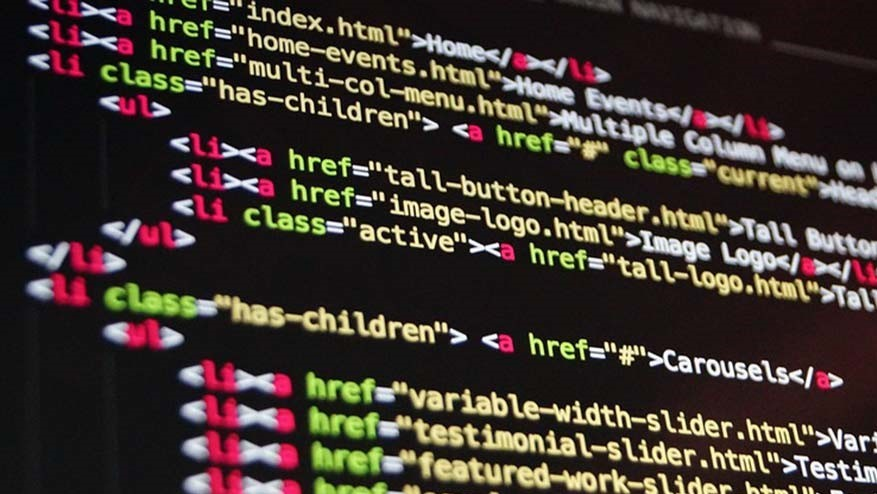
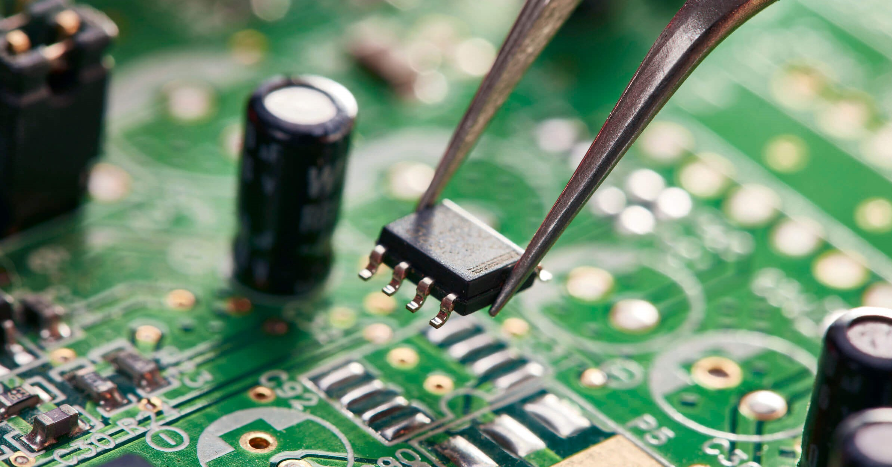
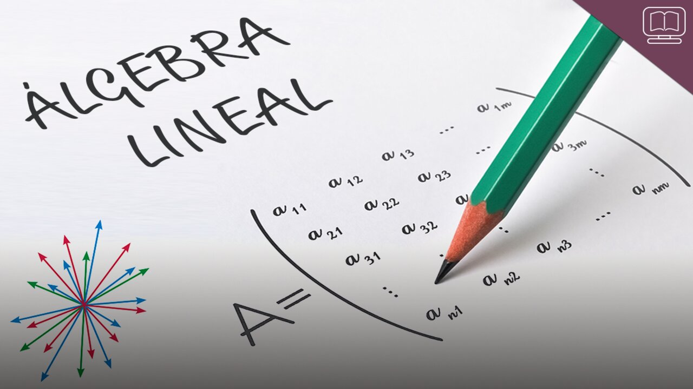

Elias Emanuel Callisaya Ruiz
Materias

Programación Web II

Programación II

Electrónica I

Cálculo I

Estadística

Álgebra Lineal
La Programación Web se centra en el desarrollo de sitios y aplicaciones que funcionan en navegadores, utilizando lenguajes como HTML, CSS y JavaScript. En el servidor, se emplean tecnologías como Python, PHP o Node.js, junto con bases de datos para gestionar información. Es fundamental para crear plataformas interactivas, tiendas en línea y servicios en la nube, siendo una pieza clave en el ecosistema digital actual.
La Programación es el proceso mediante el cual se escriben instrucciones que una computadora puede interpretar y ejecutar para realizar tareas específicas. A través de lenguajes de programación, como Python, Java o C++, los programadores diseñan soluciones a problemas creando algoritmos y estructuras lógicas. La programación es fundamental en el desarrollo de aplicaciones, software, videojuegos y sistemas operativos, entre otros, y está presente en prácticamente todos los aspectos de la tecnología moderna. Al dominarla, se pueden automatizar procesos, optimizar recursos y crear nuevas herramientas tecnológicas que mejoren la vida cotidiana.
La electrónica es la rama de la ingeniería que estudia y controla el flujo de electrones en dispositivos y circuitos. Utiliza componentes como resistencias, capacitores y transistores para construir sistemas que procesan señales y realizan operaciones. La electrónica es esencial para el funcionamiento de dispositivos como computadoras, teléfonos y sistemas de comunicación, siendo clave para los avances tecnológicos en muchas áreas, desde la medicina hasta el entretenimiento.
Las matemáticas son una disciplina que estudia las propiedades y relaciones de los números, las figuras y los espacios, utilizando el razonamiento lógico. El cálculo, una rama de las matemáticas, se enfoca en el estudio del cambio y el movimiento a través de conceptos como derivadas e integrales. Estas herramientas son fundamentales en campos como la física, la ingeniería y la economía, permitiendo modelar y resolver problemas complejos relacionados con el crecimiento, la optimización y el análisis de sistemas dinámicos.
La estadística es una rama de las matemáticas que analiza y organiza datos para extraer conclusiones. Utiliza herramientas como la probabilidad y la inferencia estadística para identificar patrones y hacer predicciones. Es clave en áreas como la investigación, la economía y la salud, ayudando a tomar decisiones basadas en datos y a entender fenómenos en situaciones de incertidumbre.
El álgebra lineal es una rama de las matemáticas que estudia vectores, matrices y espacios vectoriales. Se utiliza para resolver sistemas de ecuaciones lineales y entender transformaciones geométricas. Es fundamental en áreas como la ingeniería, la física y la informática, siendo clave en aplicaciones como el procesamiento de imágenes, la inteligencia artificial y la optimización.